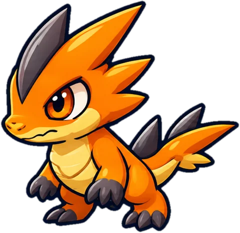

 FireDragon
FireDragonTap a stage to read its story.
Sparakeel is a scrappy little biped with vivid orange plumage spiking from its head like a tiny flame-crest, and clawed feet it stamps in the sand with great confidence. Though no bigger than a boot, it puffs its chest and tilts its head side to side whenever it encounters something new, sizing up the world with bright round eyes. Sand dune travelers say you can find a Sparakeel by following tiny three-toed prints in the morning dunes - it circles whatever new thing it found overnight, studying it from every angle.
Field note: Sparakeel practices its crest-spike display at sunrise each day, spreading each feather individually until satisfied.
Sand Dunes. Sparakeel and its family are found in the Sand Dunes. See everyone who lives there.
Share a Bond Food that matches its types to become friends. Sparakeel loves:
A Bond Food is not a trick. It joins your spirit with the Kimuro's spirit, and only when it chooses you.
Print the Kimuro adventure packs: mazes, cards, a board game and Bond Mark medals.
See the printable packs